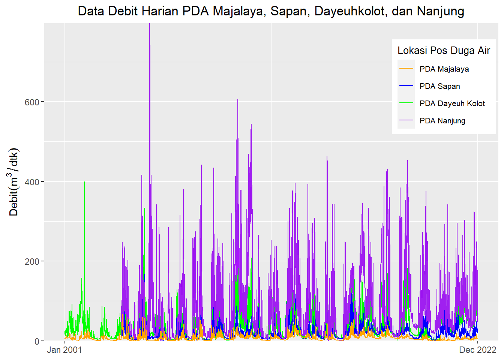

Code
plot_semua_pda <- ggplot() +
geom_line(data=dayeuh_kolot, aes(x=Date, y=Value,color='PDA Dayeuh Kolot'))+
geom_line(data=sapan, aes(x=Date, y=Value,color='PDA Sapan'))+
geom_line(data=nanjung, aes(x=Date, y=Value,color='PDA Nanjung'))+
geom_line(data=majalaya, aes(x=Date, y=Value,color='PDA Majalaya'))+
ggtitle("Data Debit Harian PDA Majalaya, Sapan, Dayeuhkolot, dan Nanjung")+
xlab(NULL)+ylab(quote(Debit(m^3/dtk)))+
theme(plot.title = element_text(hjust = 0.5))+
scale_color_manual(name='Lokasi Pos Duga Air',
breaks=c('PDA Majalaya', 'PDA Sapan','PDA Dayeuh Kolot',
'PDA Nanjung'),
values=c('PDA Majalaya'='orange','PDA Sapan'='blue',
'PDA Dayeuh Kolot'='green',
'PDA Nanjung'='purple'))+
theme(legend.title=element_text(size=10),
legend.text=element_text(size=8))+
theme(legend.position = c(0.88,0.8))
plot_semua_pda + scale_x_date(date_labels = "%b %Y",
breaks = range(dayeuh_kolot$Date) )+
theme(axis.text.x = element_text(angle = 0, hjust = 0.5))+
scale_y_continuous(expand = c(0, 0))